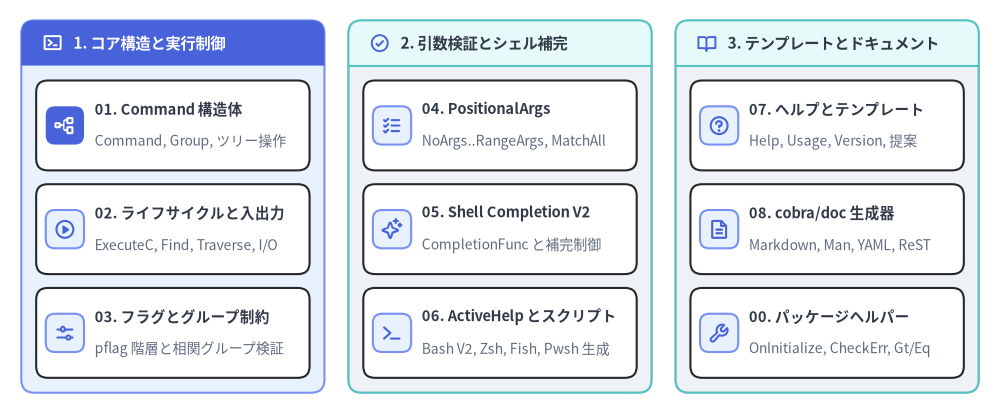
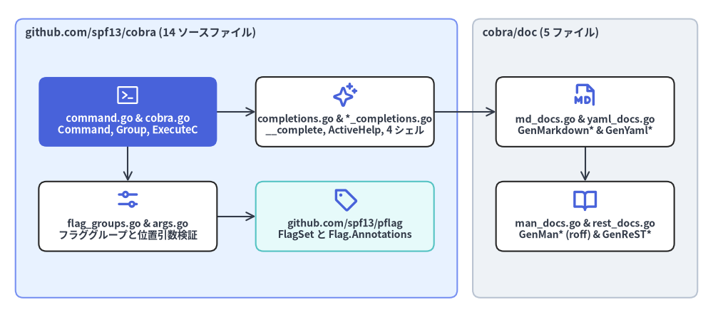

Cobra API リファレンス概要
本カタログは、github.com/spf13/cobra v1.10.2 および github.com/spf13/cobra/doc サブパッケージの全エクスポートシンボルを網羅した API リファレンスです。非テスト用の Go ソースファイル全 19 ファイルに定義された 17 個のエクスポート型と 176 個のエクスポートシンボル（構造体、関数型、メソッド、定数、グローバル設定変数、ドキュメント生成関数）をソースコードと 100% 一致するシグネチャで解説します。

Source Code
from drawlib.canvas import save, setup
from drawlib.icons import phosphor
from drawlib.smartarts import CardList, Panel
from drawlib.styles import Colors, Styles
setup(width=188, height=78)
_ = Colors
col_specs = [
(
4.0,
"1. コア構造と実行制御",
Styles.PrimaryNeutral,
Styles.PrimaryFlat,
Styles.WhiteBold.patch(text_size=11.0),
phosphor.terminal_window,
Styles.WhiteBold,
[
("01. Command 構造体", "Command, Group, ツリー操作", phosphor.tree_structure, True),
("02. ライフサイクルと入出力", "ExecuteC, Find, Traverse, I/O", phosphor.play_circle, False),
("03. フラグとグループ制約", "pflag 階層と相関グループ検証", phosphor.sliders_horizontal, False),
],
),
(
65.5,
"2. 引数検証とシェル補完",
Styles.Neutral,
Styles.SecondaryNeutral,
Styles.DarkBold.patch(text_size=11.0),
phosphor.check_circle,
Styles.PrimaryBold,
[
("04. PositionalArgs", "NoArgs..RangeArgs, MatchAll", phosphor.list_checks, False),
("05. Shell Completion V2", "CompletionFunc と補完制御", phosphor.sparkle, False),
("06. ActiveHelp とスクリプト", "Bash V2, Zsh, Fish, Pwsh 生成", phosphor.terminal, False),
],
),
(
127.0,
"3. テンプレートとドキュメント",
Styles.Neutral,
Styles.SecondaryNeutral,
Styles.DarkBold.patch(text_size=11.0),
phosphor.book_open,
Styles.PrimaryBold,
[
("07. ヘルプとテンプレート", "Help, Usage, Version, 提案", phosphor.question, False),
("08. cobra/doc 生成器", "Markdown, Man, YAML, ReST", phosphor.file_text, False),
("00. パッケージヘルパー", "OnInitialize, CheckErr, Gt/Eq", phosphor.wrench, False),
],
),
]
for x0, title, body_style, hdr_style, hdr_text_style, hdr_icon, hdr_icon_style, items in col_specs:
panel = Panel(
title,
"",
style=body_style,
header_style=hdr_style,
text_style=hdr_text_style,
icon=hdr_icon,
icon_style=hdr_icon_style,
header_variant="filled",
header_height=8.5,
)
panel.draw((x0, 4.0), width=57.0, height=70.0, align="bottom_left")
inner_xy, inner_w, inner_h = panel.get_content_box(
(x0, 4.0),
width=57.0,
height=70.0,
padding=(2.8, 2.8),
align="bottom_left",
)
cards = CardList(
style=Styles.White,
text_style=Styles.DarkBold.patch(text_size=10.5),
description_style=Styles.Muted.patch(text_size=10.0),
badge_shape="rounded_rect",
badge_style=Styles.PrimaryNeutral,
icon_style=Styles.PrimaryBold,
direction="vertical",
spacing=2.6,
)
for mod_name, mod_desc, mod_icon, is_focal in items:
if is_focal:
cards.add(
mod_name,
mod_desc,
icon=mod_icon,
badge_style=Styles.PrimaryFlat,
icon_style=Styles.WhiteBold,
)
else:
cards.add(mod_name, mod_desc, icon=mod_icon)
cards.draw(inner_xy, width=inner_w, height=inner_h, align="bottom_left")
save()
packagegithub.com/spf13/cobra#
Cobra モジュール（github.com/spf13/cobra）は、以下の 2 つの Go パッケージで構成されています。
github.com/spf13/cobra（ルートパッケージ —14ファイル）:Command、Group、PositionalArgs、CompletionOptions、ShellCompDirective、フラググループ相関バリデータ、動的 Shell Completion V2（__complete）、ActiveHelp、および 4 大シェル（Bash / Zsh / Fish / PowerShell）用スクリプト生成メソッドを提供します。github.com/spf13/cobra/doc（ドキュメント生成サブパッケージ —5ファイル）: Go AST の静的解析に依存せず、実行時のcobra.Commandツリーから Markdown、Unix Man ページ（roff）、YAML、reStructuredText（ReST）のリファレンスを直接生成します。
エクスポート API 統計（v1.10.2）#
| 指標 | ルートパッケージ (cobra) |
サブパッケージ (cobra/doc) |
合計 (v1.10.2) |
|---|---|---|---|
| 非テスト Go ソースファイル | 14 (command.go, completions.go, cobra.go ほか) |
5 (man_docs.go, md_docs.go, rest_docs.go, yaml_docs.go, util.go) |
全 19 ファイル |
| エクスポート型・型エイリアス | 7 (Command, Group, FParseErrWhitelist, PositionalArgs, ShellCompDirective, CompletionOptions, Completion, CompletionFunc) |
2 (GenManHeader, GenManTreeOptions) + 内部スキーマ構造体 |
計 17 型定義 |
*Command のエクスポートメソッド |
108 メソッド（ツリー管理、実行、フラグ、引数、補完、テンプレート） |
0（*cobra.Command を受け取るパッケージ関数として提供） |
計 109 メソッド（CompletionOptions.SetDefaultShellCompDirective 含む） |
| パッケージ関数・変数・定数 | 41 (OnInitialize, MatchAll, FixedCompletions, ShellCompDirective*, Enable*) |
14 (GenMarkdown*, GenMan*, GenYaml*, GenReST*) |
計 176 エクスポートシンボル |
カタログ全 8 章ナビゲーション#
| チャプター | 対象ソースファイル | 主なエクスポートシンボル |
|---|---|---|
| 00. API リファレンス概要 | cobra.go, command.go, bash_completions.go, completions.go |
パッケージ構成、Enable* グローバル変数、アノテーション定数、OnInitialize, OnFinalize, AddTemplateFunc, CheckErr, WriteStringAndCheck, Gt, Eq |
| 01. Command 構造体とコマンドグループ | command.go |
Command（全 35 公開フィールド）、Group, FParseErrWhitelist, AddCommand, RemoveCommand, Commands, Parent, Root, AddGroup, Groups, ContainsGroup, UseLine, CommandPath |
| 02. ライフサイクル・実行・I/O ストリーム | command.go, cobra.go |
Execute, ExecuteC, ExecuteContext, ExecuteContextC, Context, SetContext, Find, Traverse, ArgsLenAtDash, SetArgs, SetOut, SetErr, SetIn, OutOrStdout, ErrOrStderr, Print*, SetErrPrefix |
| 03. フラグとフラググループ | command.go, flag_groups.go, shell_completions.go, bash_completions.go |
Flags, PersistentFlags, LocalFlags, InheritedFlags, ParseFlags, Flag, MarkFlagsRequiredTogether, MarkFlagsOneRequired, MarkFlagsMutuallyExclusive, ValidateFlagGroups, MarkFlagRequired, MarkFlagFilename, MarkFlagDirname |
04. 位置引数バリデータ (PositionalArgs) |
args.go, command.go |
PositionalArgs, ValidateArgs, NoArgs, OnlyValidArgs, ArbitraryArgs, MinimumNArgs, MaximumNArgs, ExactArgs, ExactValidArgs, RangeArgs, MatchAll, legacyArgs |
| 05. シェル補完 V2 とディレクティブ | completions.go |
Completion, CompletionFunc, ShellCompDirective (Default, Error, NoSpace, NoFileComp, FilterFileExt, FilterDirs, KeepOrder), CompletionOptions, CompletionWithDesc, FixedCompletions, NoFileCompletions, RegisterFlagCompletionFunc, CompDebug* |
| 06. ActiveHelp とシェルスクリプト生成 | active_help.go, bash_completions*.go, zsh_completions.go, fish_completions.go, powershell_completions.go |
AppendActiveHelp, GetActiveHelpConfig, InitDefaultCompletionCmd, GenBashCompletionV2, GenZshCompletion*, GenFishCompletion*, GenPowerShellCompletion* |
| 07. ヘルプ・Usage・テンプレート | command.go, cobra.go |
Help, HelpFunc, SetHelpFunc, SetHelpCommand, SetHelpTemplate, Usage, UsageFunc, UsageString, SetUsageFunc, SetUsageTemplate, SetVersionTemplate, SuggestionsFor |
08. ドキュメント自動生成 (cobra/doc) |
doc/md_docs.go, doc/man_docs.go, doc/yaml_docs.go, doc/rest_docs.go |
GenMarkdown, GenMarkdownTree*, GenMan, GenManTree*, GenManHeader, GenManTreeOptions, GenYaml, GenYamlTree*, GenReST, GenReSTTree* |

Source Code
from drawlib.canvas import save, setup
from drawlib.diagrams.architecture import ArchitectureDiagram, Node, NodeGroup, PhosphorIcon
from drawlib.styles import Colors, Styles
setup(width=184, height=82)
_ = Colors
d = ArchitectureDiagram(
node_style=Styles.PrimaryBold,
node_text_style=Styles.DarkBold.patch(text_size=10.2),
edge_style=Styles.DarkBold.patch(line_width=1.5),
edge_text_style=Styles.Dark.patch(text_size=10.0),
node_card_style=Styles.White,
)
root_grp = d.add(
NodeGroup(
"github.com/spf13/cobra (14 ソースファイル)",
width=114,
height=72,
style=Styles.PrimaryNeutral.patch(shape_r=2.0),
text_style=Styles.DarkBold.patch(text_size=11.0, halign="left", valign="top"),
),
xy=(4.0, 5.0),
)
cmd_node = root_grp.add(
Node(
"command.go & cobra.go\nCommand, Group, ExecuteC",
icon=PhosphorIcon.TERMINAL_WINDOW,
icon_size=6.5,
width=46,
height=18,
style=Styles.White,
text_style=Styles.WhiteBold.patch(text_size=10.5),
card_style=Styles.PrimaryFlat.patch(shape_r=2.0),
),
xy=(29.0, 48.0),
)
flags_node = root_grp.add(
Node(
"flag_groups.go & args.go\nフラググループと位置引数検証",
icon=PhosphorIcon.SLIDERS_HORIZONTAL,
icon_size=6.5,
width=46,
height=18,
card_style=Styles.White.patch(shape_r=2.0),
),
xy=(29.0, 21.0),
)
comp_node = root_grp.add(
Node(
"completions.go & *_completions.go\n__complete, ActiveHelp, 4 シェル",
icon=PhosphorIcon.SPARKLE,
icon_size=6.5,
width=46,
height=18,
card_style=Styles.White.patch(shape_r=2.0),
),
xy=(85.0, 48.0),
)
pflag_node = root_grp.add(
Node(
"github.com/spf13/pflag\nFlagSet と Flag.Annotations",
icon=PhosphorIcon.TAG,
icon_size=6.5,
width=46,
height=18,
card_style=Styles.SecondaryNeutral.patch(shape_r=2.0),
),
xy=(85.0, 21.0),
)
doc_grp = d.add(
NodeGroup(
"cobra/doc (5 ファイル)",
width=58,
height=72,
style=Styles.Neutral.patch(shape_r=2.0),
text_style=Styles.DarkBold.patch(text_size=11.0, halign="left", valign="top"),
),
xy=(122.0, 5.0),
)
md_node = doc_grp.add(
Node(
"md_docs.go & yaml_docs.go\nGenMarkdown* & GenYaml*",
icon=PhosphorIcon.FILE_MD,
icon_size=6.5,
width=46,
height=18,
card_style=Styles.White.patch(shape_r=2.0),
),
xy=(29.0, 48.0),
)
man_node = doc_grp.add(
Node(
"man_docs.go & rest_docs.go\nGenMan* (roff) & GenReST*",
icon=PhosphorIcon.BOOK_OPEN,
icon_size=6.5,
width=46,
height=18,
card_style=Styles.White.patch(shape_r=2.0),
),
xy=(29.0, 21.0),
)
d.connect(cmd_node, flags_node)
d.connect(cmd_node, comp_node)
d.connect(flags_node, pflag_node)
d.connect(comp_node, md_node)
d.connect(md_node, man_node)
d.draw((0.0, 0.0))
save()
var パッケージレベル設定変数 (cobra.go)#
cobra.go（および Windows 向けの command_win.go）では、コマンド解決・ソート順・フック継承・Windows Explorer 起動時のスプラッシュ表示を制御する 6 つのグローバル変数が公開されています。
var (
EnablePrefixMatching = false
EnableCommandSorting = true
EnableCaseInsensitive = false
EnableTraverseRunHooks = false
MousetrapHelpText = "This is a command line tool.\n\nYou need to open cmd.exe and run it from there.\n"
MousetrapDisplayDuration = 5 * time.Second
)
| 変数名 | 型 | デフォルト値 | 説明 |
|---|---|---|---|
cobra.EnablePrefixMatching |
bool |
false |
true に設定すると、findNext() で一意に特定できる前方一致プレフィックス（例：app deploy に対する app dep）を許可します。後からサブコマンドを追加した際に既存スクリプトのプレフィックス解決が壊れるリスクがあるため、デフォルトは false です。 |
cobra.EnableCommandSorting |
bool |
true |
cmd.Commands() が子コマンドを Name() の辞書順でソートするかどうかを制御します。AddCommand() の登録順をそのまま維持したい場合は false に設定します。 |
cobra.EnableCaseInsensitive |
bool |
false |
true に設定すると、コマンド名およびエイリアスの照合・補完で大文字小文字を区別しなくなります（strings.EqualFold）。 |
cobra.EnableTraverseRunHooks |
bool |
false |
false（デフォルト）では最も近い親の PersistentPreRun[E] / PersistentPostRun[E] のみを 1 つ実行します。true に設定すると、ルートから対象コマンドへ親から順にすべての PersistentPreRun[E] を実行し、実行後は対象コマンドからルートへ逆順にすべての PersistentPostRun[E] を実行します。 |
cobra.MousetrapHelpText |
string |
"This is a command line tool..." |
Windows 環境で explorer.exe から直接ダブルクリック起動された際に表示する案内メッセージです。空文字列 "" を設定すると無効化されます（command_win.go）。 |
cobra.MousetrapDisplayDuration |
time.Duration |
5 * time.Second |
Windows で MousetrapHelpText を表示してからウィンドウを閉じるまでの待機時間です。0 を指定すると Enter キーが押されるまで待機します。 |
constエクスポート済みアノテーション・補完定数#
Cobra は pflag.Flag.Annotations（map[string][]string）および Command.Annotations（map[string]string）にメタデータを格納するため、以下の定数キーを公開しています。
const (
// command.go
FlagSetByCobraAnnotation = "cobra_annotation_flag_set_by_cobra"
CommandDisplayNameAnnotation = "cobra_annotation_command_display_name"
// bash_completions.go
BashCompFilenameExt = "cobra_annotation_bash_completion_filename_extensions"
BashCompCustom = "cobra_annotation_bash_completion_custom"
BashCompOneRequiredFlag = "cobra_annotation_bash_completion_one_required_flag"
BashCompSubdirsInDir = "cobra_annotation_bash_completion_subdirs_in_dir"
// completions.go
ShellCompRequestCmd = "__complete"
ShellCompNoDescRequestCmd = "__completeNoDesc"
)
| 定数名 | 値 | 付与対象 | 説明 |
|---|---|---|---|
FlagSetByCobraAnnotation |
"cobra_annotation_flag_set_by_cobra" |
pflag.Flag.Annotations |
Cobra が自動追加した --help および --version フラグに付与される識別アノテーションです。 |
CommandDisplayNameAnnotation |
"cobra_annotation_command_display_name" |
Command.Annotations |
ルーティング上の cmd.Name() を変更せずに、ヘルプや Usage 行の cmd.DisplayName() 表示名のみを上書きします（kubectl-foo プラグインを kubectl foo と表示する場合などに使用）。 |
BashCompFilenameExt |
"cobra_annotation_bash_completion_filename_extensions" |
pflag.Flag.Annotations |
MarkFlagFilename() により設定され、シェル補完候補を指定拡張子のファイルに絞り込みます（ShellCompDirectiveFilterFileExt 相当）。 |
BashCompCustom |
"cobra_annotation_bash_completion_custom" |
pflag.Flag.Annotations |
MarkFlagCustom() により設定され、レガシー Bash 補完用のカスタムシェル関数名をフラグに紐付けます。 |
BashCompOneRequiredFlag |
"cobra_annotation_bash_completion_one_required_flag" |
pflag.Flag.Annotations |
MarkFlagRequired() / MarkPersistentFlagRequired() により "true" が設定され、execute() 内の ValidateRequiredFlags() で必須チェックが行われます。 |
BashCompSubdirsInDir |
"cobra_annotation_bash_completion_subdirs_in_dir" |
pflag.Flag.Annotations |
MarkFlagDirname() により設定され、シェル補完候補をディレクトリのみに制限します（ShellCompDirectiveFilterDirs 相当）。 |
ShellCompRequestCmd |
"__complete" |
隠しサブコマンド | シェル補完スクリプトが動的補完候補（説明付き）を取得するために内部呼び出しする隠しコマンド名です。 |
ShellCompNoDescRequestCmd |
"__completeNoDesc" |
隠しエイリアス | 説明文（\t 以降）を除いた補完候補を要求する __complete のエイリアス名です。 |
funccobra.OnInitialize(y ...func())#
任意のコマンドで Execute() が呼ばれた際、cmd.preRun() 内（フラグ解析 ParseFlags() の完了直後、かつ ValidateArgs() および *Run フック連鎖の直前）に実行されるグローバル初期化コールバックを登録します。コマンドラインフラグの解析結果を受けて viper の設定ファイルを読み込む用途で広く使われます。
func OnInitialize(y ...func())
パラメータ#
| パラメータ | 型 | 説明 |
|---|---|---|
y |
...func() |
パッケージ内部の initializers スライスに追加される引数なしの初期化関数（可変長引数）。 |
funccobra.OnFinalize(y ...func())#
対象コマンドの execute() メソッドが終了する際（Run / RunE の正常終了・エラー返却を問わず）、defer c.postRun() によって必ず呼び出されるグローバル終了処理コールバックを登録します。
func OnFinalize(y ...func())
パラメータ#
| パラメータ | 型 | 説明 |
|---|---|---|
y |
...func() |
パッケージ内部の finalizers スライスに追加される引数なしのクリーンアップ関数（可変長引数）。 |
使用例 (OnInitialize と OnFinalize)#
package main
import (
"fmt"
"github.com/spf13/cobra"
)
func init() {
cobra.OnInitialize(func() {
// ParseFlags() の後、PersistentPreRunE / RunE の前に実行される
fmt.Println("initializing runtime configuration...")
})
cobra.OnFinalize(func() {
// PostRunE / PersistentPostRunE の後に defer で確実に実行される
fmt.Println("flushing telemetry buffers...")
})
}
funccobra.AddTemplateFunc & cobra.AddTemplateFuncs#
Cobra のグローバルな templateFuncs マップにカスタム text/template 関数を登録し、Help・Usage・Version の各カスタムテンプレート（SetHelpTemplate, SetUsageTemplate, SetVersionTemplate）内から呼び出せるようにします。
func AddTemplateFunc(name string, tmplFunc interface{})
func AddTemplateFuncs(tmplFuncs template.FuncMap)
組み込みテンプレート関数一覧 (cobra.go)#
| テンプレート関数名 | 実装関数 | 説明 |
|---|---|---|
trim |
strings.TrimSpace |
前後の空白文字を除去します。 |
trimRightSpace / trimTrailingWhitespaces |
trimRightSpace |
末尾の Unicode 空白文字を除去します（strings.TrimRightFunc(s, unicode.IsSpace)）。 |
appendIfNotPresent |
appendIfNotPresent |
s に stringToAppend が含まれていない場合のみ、スペース区切りで末尾に連結します。 |
rpad |
rpad(s string, padding int) |
文字列 s を指定幅 padding まで右側スペース埋めします（fmt.Sprintf("%%-%ds", padding)）。 |
gt |
cobra.Gt |
配列・スライス・マップ・チャネルの長さ、または整数 / 数値文字列の大小（a > b）を比較します。 |
eq |
cobra.Eq |
整数型または文字列型の等価性（a == b）を判定します。 |
funccobra.CheckErr & cobra.WriteStringAndCheck#
CLI の main() エントリポイントや補完・ドキュメント生成時のバッファ書き込みで使われるエラーチェック用ヘルパー関数です。
func CheckErr(msg interface{})
func WriteStringAndCheck(b io.StringWriter, s string)
| 関数名 | シグネチャ | 動作仕様 |
|---|---|---|
CheckErr |
func CheckErr(msg interface{}) |
msg != nil の場合、標準エラー出力に "Error: <msg>"（fmt.Fprintln(os.Stderr, "Error:", msg)）を出力して os.Exit(1) でプロセスを終了します。msg == nil の場合は何もしません。 |
WriteStringAndCheck |
func WriteStringAndCheck(b io.StringWriter, s string) |
_, err := b.WriteString(s) を実行し、CheckErr(err) に渡します。シェル補完生成器や cobra/doc 内部で広く使用されています。 |
funccobra.Gt & cobra.Eq#
text/template 互換のために公開されているリフレクションベースの比較関数（gt / eq テンプレート関数の実体）です。
func Gt(a interface{}, b interface{}) bool
func Eq(a interface{}, b interface{}) bool
[!WARNING] レガシー互換関数 (
cobra.Gt/cobra.Eq):cobra.go内のFIXMEコメントにある通り、これらは古い Go テンプレートとの後方互換性のために残されており、Cobra v2 で削除予定です。またEqにArray、Chan、Map、Sliceを渡すとpanic("Eq called on unsupported type")が発生するため、新規コードでは Go 標準のgt/eqテンプレート組み込み関数を使用してください。